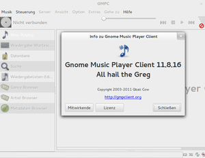

GNOME Music Player Client
Dieser Artikel wurde für die folgenden Ubuntu-Versionen getestet:
Ubuntu 16.04 Xenial Xerus
Ubuntu 14.04 Trusty Tahr
Zum Verständnis dieses Artikels sind folgende Seiten hilfreich:
Archive entpacken, optional
Programme kompilieren, optional
Der GNOME Music Player Client  (GMPC) ist ein Music Player Client für den GNOME-Desktop und ähnelt Audio-Playern wie Amarok, Rhythmbox oder dem MPD-Client Sonata.
(GMPC) ist ein Music Player Client für den GNOME-Desktop und ähnelt Audio-Playern wie Amarok, Rhythmbox oder dem MPD-Client Sonata.
Installation¶
Folgendes Paket muss installiert werden [1]:
gmpc (universe)
mit apturl
Paketliste zum Kopieren:
sudo apt-get install gmpc
sudo aptitude install gmpc
Anschließend kann man die Anwendung gmpc starten [4]

Benutzung¶
Mit GMPC kann man auf verschiedene Arten sein Musikarchiv durchforsten und Musik zur Wiedergabeliste hinzufügen. Man kann sein Archiv so durchsuchen, wie es auf der Festplatte abgelegt ist oder in der vom MPD-Server erstellten Datenbank. Man kann auch die Datenbank mittels mehrerer hintereinander folgenden Suchabfragen durchsuchen oder ab Version 0.15.5 einen Genre- oder Artistbrowser benutzen, die stark an Rhythmbox erinnern.
Es gibt auch einen Metadaten-Browser, bei dem man sich Daten wie die Gesamtspielzeit der Musik einer Band im Archiv ansehen oder sich alle Alben auflisten lassen kann. GMPC lässt sich auch mit Plugins erweitern, welche z.b. die Alben-Cover und Bandfotos von der Festplatte, Amazon oder last.fm laden können.
Plugins¶
Ubuntu-Paketquellen¶
Folgendes Paket enthält zahlreiche Plugins [1]:
gmpc-plugins (universe)
mit apturl
Paketliste zum Kopieren:
sudo apt-get install gmpc-plugins
sudo aptitude install gmpc-plugins
Selber kompilieren¶
Die Plugins können auch von der Website heruntergeladen und kompiliert werden. Dafür sind zusätzlich zu den zum Kompilieren notwendigen Paketen[3] die folgenden Bibliotheken zu installieren [1]:
gmpc-dev (universe )
libglib2.0-dev
libgtk2.0-dev
libnotify-dev
libxml2-dev
mit apturl
Paketliste zum Kopieren:
sudo apt-get install gmpc-dev libglib2.0-dev libgtk2.0-dev libnotify-dev libxml2-dev
sudo aptitude install gmpc-dev libglib2.0-dev libgtk2.0-dev libnotify-dev libxml2-dev
Wenn man das Archiv des Plugins entpackt hat [2], kann man es mit dem "Dreisatz" kompilieren und installieren [3]. Dabei ist zu beachten, dass in das Verzeichnis /usr/local/share/gmpc installiert würde, dass als Ubuntu-Paket installierte GMPC aber /usr/share/gmpc nutzt und so ohne Änderung die neuen Plugins nicht finden kann. Das lässt sich beheben, indem man beim Aufruf von ./configure den Parameter --prefix nutzt um das korrekte Verzeichnis anzugeben. Dies muss bei jedem Plugin gemacht werden:
./configure --prefix=/usr